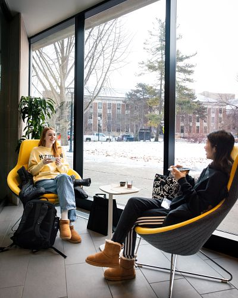

CEW+
WELCOME TO THE CENTER FOR THE EDUCATION OF WOMEN +
WHO WE ARE
At CEW+, we navigate circumstantial barriers by providing academic, financial, and professional support to help you reach your personal potential. Established to support women through higher education, we lift up women and all underserved communities at U-M and beyond. Through career and education counseling, funding, workshops, events, and a diverse, welcoming community, we exist to empower. We are CEW+, and we’re here to help you reach your potential.

UPCOMING EVENTS
FINANCIAL EMPOWERMENT SERIES: #3 Ultimate Financial Wellness | January 28, 2025
VIRTUAL | CEW+Inspire Midweek Mindfulness Guided Sit, January 29, 2025
FINANCIAL EMPOWERMENT SERIES: #4 Caring for Your$elf | February 4, 2025
VIRTUAL | CEW+Inspire Midweek Mindfulness Guided Sit, February 5, 2025